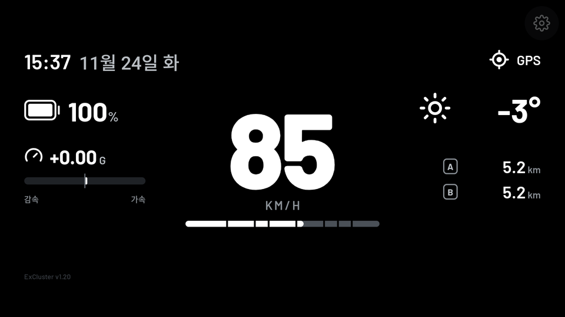
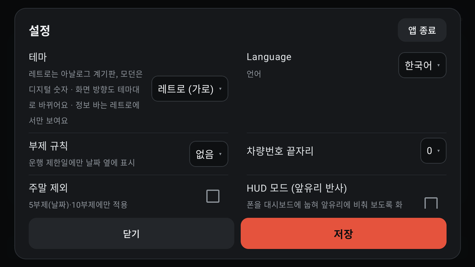

ExCluster 사용 설명서
스마트폰을 클래식 자동차 계기판처럼 쓰는 앱입니다. 이 설명서는 버전 1.14 기준입니다. 설정 화면의 글자와 같은 이름으로 적었으니 화면을 보면서 찾아 보세요.
안전 먼저. 폰은 시야나 에어백을 가리지 않는 곳에, 급제동이나 요철에도 떨어지지 않게 단단히 고정하세요. 운전 중에는 조작하지 말고, 설정은 정차 중에 바꾸세요.
1. 시작하기
- 폰을 거치대에 단단히 고정합니다.
- 앱을 열고 시작을 누릅니다. 위치(GPS) 권한을 허용하세요. 앱이 화면에 있을 때만 위치를 씁니다.
- 처음에는 안전 안내가 나옵니다. 읽고 계속하면 전체 화면 계기판이 켜지고 화면이 꺼지지 않게 유지됩니다.
- 차에서 쓰기 전에 써 보고 싶으면 데모 모드를 누르세요. GPS 없이 가상으로 달리는 화면을 보여 줍니다.
2. 화면에서 하는 일
 레트로(가로): 가운데가 속도계, 오른쪽이 가상 RPM, 왼쪽이 가속·배터리·온도 계기이고 아래 줄에 트립, 시계, GPS 상태가 있습니다.
레트로(가로): 가운데가 속도계, 오른쪽이 가상 RPM, 왼쪽이 가속·배터리·온도 계기이고 아래 줄에 트립, 시계, GPS 상태가 있습니다.

모던(가로): 큰 디지털 숫자와 속도 바. 구역마다 따로 옮길 수 있습니다.- 설정 열기: 오른쪽 위 톱니 아이콘을 누르거나 계기판을 0.8초 길게 누릅니다.
- 트립 A·B 거리 0으로: 트립 숫자를 1.5초 길게 누릅니다.
- GPS 상태: 초록색 "GPS"는 정상, "EST"는 터널 등에서 GPS가 끊겨 센서로 속도를 추정 중이라는 뜻입니다.
- 가상 RPM과 변속 표시는 속도에 맞춰 움직이는 장식이고, 실제 차의 값과는 무관합니다.
- 안드로이드 오토를 켠 경우 배터리 부분을 누르면 폰 배터리와 차 배터리가 바뀌고, 트립 부분을 누르면 트립과 주행거리가 바뀝니다.
3. 쉬운 설정
설정 화면 첫 페이지입니다.

쉬운 설정의 첫 부분입니다. 아래로 내리면 소리, 상세 설정 열기, 안전 안내 다시 보기, 테스트 정보 복사가 있습니다.| 항목 | 하는 일 |
|---|---|
| 테마 | 레트로(아날로그 바늘) 또는 모던(디지털 숫자), 각각 가로와 세로. 화면 방향도 테마를 따라 바뀝니다 |
| 언어 | 자동, 한국어, English |
| 부제 규칙 | 한국의 5부제·10부제 운행 제한일에만 날짜 옆에 표시합니다 |
| 차량번호 끝자리 | 부제 계산에 쓰는 숫자입니다 |
| 주말 제외 | 날짜 기준 5부제와 10부제에서 주말을 뺍니다 |
| HUD 모드 (앞유리 반사) | 폰을 대시보드에 눕혀 앞유리에 비춰 보도록 화면을 위아래로 뒤집습니다 |
| 소리 | 켜면 레트로는 엔진 소리, 모던은 내 소리가 주행에 맞춰 납니다. 기본은 꺼짐 |
| 상세 설정 열기 | 아래 4번의 세부 설정으로 갑니다 |
| 안전 안내 다시 보기 | 처음에 본 안전 안내를 다시 읽습니다 |
| 테스트 정보 복사 | 앱 버전, 폰 기종, 안드로이드 버전, 화면 설정을 복사합니다(문의나 테스트 결과에 붙여넣기용, 위치·개인 정보 없음) |
4. 상세 설정
쉬운 설정의 "상세 설정 열기"로 들어갑니다. 위쪽 검색 칸에서 항목 이름이나 설명으로 찾을 수 있습니다.
화면
| 항목 | 하는 일 |
|---|---|
| 화면 위치·크기 | 조정하기로 갑니다(아래 5번) |
| 화면 방향 | 시스템 회전 설정과 관계없이 가로로 고정합니다. HUD로 눕혀 쓸 때는 한쪽 고정을 권장합니다 |
| 바늘 효과 | 속도계 잔상, RPM 반동, 노면 진동, 100 km/h 이상 숫자 떨림을 켜고 끕니다 |
| 배경 사진 | 모던 테마의 배경 사진. 사진은 이 폰에만 저장됩니다 |
| 사진 어둡게 / 사진 흐림 | 밝은 사진일수록 어둡게, 필요하면 흐리게 |
| 밤에 자동으로 어둡게 | 해가 진 뒤 사진 밝기를 절반으로 |
| 글씨 배경 | 사진 위에서도 글씨가 잘 보이게 |
| 위젯 표시 | 모던 화면에서 보일 구역을 고릅니다(속도는 항상 표시) |
주행
| 항목 | 하는 일 |
|---|---|
| 계기판 맞춤 보정 | 차 계기판은 실제 속도보다 높게 표시돼서, 앱 표시를 계기판에 맞춥니다. 표시만 바뀌고 트립과 기록은 실제 속도입니다 |
| 보정 기준 속도 | 이 속도 이상에서는 보정값 전체를 더하고, 그 아래는 0 km/h부터 직선으로 늘립니다 |
| 타이어 / 타이어 규격 | 가상 RPM 계산용입니다. 타이어 옆면 표기(예: 245/45R19)를 입력합니다 |
| 변속기 | 가상 RPM의 기어비와 변속 시점을 고릅니다 |
| 가속 센서 방향 | 폰을 세워 화면이 운전석을 향하면 기본값입니다 |
| 거치 방향 자동 학습 | 출발·제동 때 GPS 속도 변화로 전방을 찾아서 폰을 어떤 각도로 놓아도 가속을 읽습니다 |
| GPS 끊기면 속도 숫자 글리치 | 터널에서 센서 추정값이라는 것을 색 번짐과 짧은 화면 찢김으로 알려 줍니다 |
HUD
| 항목 | 하는 일 |
|---|---|
| 위쪽 폭 / 높이 | 앞유리 경사에 맞게 화면 모양을 조금 보정합니다(HUD 모드를 켠 때만) |
| 화면 밝기 | 자동 또는 고정 |
| 밝기 보정 | 자동 밝기를 전체적으로 어둡게·밝게 옮깁니다. HUD는 앞유리 반사 때문에 더 밝게 시작합니다 |
| 고정 밝기 | 고정으로 쓸 때의 밝기 |
소리
| 항목 | 하는 일 |
|---|---|
| 레트로 테마 소리 | 엔진 소리 또는 내 소리. 엔진 소리는 처음 켤 때 잠시 준비하고 저장 공간을 약 75 MB 씁니다 |
| 내 소리 고르기 | 내가 가진 음원의 짧은 구간을 속도와 가속에 따라 변하는 소리로 씁니다 |
| 소리 크기 | 최대 150%. 100%를 넘기면 내비 안내가 훨씬 클 때 도움이 됩니다 |
| GPS 끊기면 소리 끄기 | 신호가 없을 때는 조용히 |
| 다른 소리를 줄이지 않기 | 켜면 음악을 그대로 두고 섞어 내보냅니다. 끄면 이 소리가 날 때만 음악이 작아집니다 |
| 음성 안내 때 음악 줄이기 | 과열 경고를 말하는 동안만 음악이 잠깐 작아집니다 |
| 목소리 확인 | 폰의 텍스트 음성 변환 목소리로 한 문장을 말해 봅니다(목소리는 폰 설정에서 바꿉니다) |
차량 데이터
| 항목 | 하는 일 |
|---|---|
| 안드로이드 오토 | 켜면 차의 주행거리, 배터리, 주행 가능 거리를 계기판에 보여 주고 GPS가 끊길 때 차 속도를 보조로 씁니다. 끄면 차 데이터를 받지 않습니다 |
| 차 데이터 상태 | 차에서 받는 값의 상태 |
전원·발열
| 항목 | 하는 일 |
|---|---|
| 밤·터널에 계기판 어둡게 | 해가 진 뒤나 터널에서 글씨 밝기를 낮춰 눈부심을 줄입니다 |
| 과열 보호 | 폰이 뜨거워지면 경고하고 단계에 따라 화면을 단순하게 하며 소리·기록을 멈춥니다. 여름 낮 대시보드에서 쓸 때 켜 두세요 |
| 백그라운드 실행 | 앱이 화면에서 벗어나면 GPS와 센서를 멈추고 돌아오면 다시 시작합니다 |
| 날씨 | 네 가지 예보 모델의 강수량으로 비·눈을 판단합니다. 예보라서 실제와 다를 수 있습니다 |
| 데모 모드 | GPS 없이 가상 주행을 보여 줍니다. 켜져 있는 동안 화면에 흐린 "DEMO" 글자가 보입니다. 크루즈 버튼은 지금 속도를 유지하고, +5 / −5는 5의 배수로 올리고 내립니다 |
숨은 메뉴(개발자·테스트용). 설정 맨 아래의 "ExCluster v…" 글자를 7번 누르면 "디버그 모드"와 "주행 로그"가 열립니다. 속도와 센서 값을 폰에 기록해서 문제를 분석할 때 씁니다. 평소에는 필요 없습니다.
5. 조정하기 (화면 위치·크기)
상세 설정의 화면 위치·크기에서 조정하기를 누르면 아래 막대가 나옵니다. 바꾼 설정이 저장되지 않은 상태라면 "저장하고 조정할까요?"라고 물어보고, 저장한 뒤 바로 조정을 엽니다.
 조정하기 막대. 점선은 계기판이 차지하는 영역입니다.
조정하기 막대. 점선은 계기판이 차지하는 영역입니다.
- 끌어서 이동, 두 손가락으로 크기 조절: 스티어링 휠 사이로 보이는 영역에 맞춥니다.
- 크기 / 숫자: 슬라이더로 전체 크기와 속도 숫자 크기를 정합니다(모던 테마에서는 속도 구역 크기).
- 정보 바 위·아래, 크기: 레트로 테마에서 아래쪽 트립·시계·GPS 줄의 위치와 크기를 고릅니다.
- 카메라 구멍 피하기: 화면은 기본으로 폰의 카메라 구멍까지 꽉 차게 나옵니다. 구멍에 가려지는 부분이 있으면 켜세요.
- 배터리·RPM 계기 자리 바꾸기(레트로): 작은 계기 묶음(배터리 등)과 RPM 계기의 자리를 바꿉니다. 세로 화면에서는 RPM이 위로 올라옵니다.
- 모던 테마: 위쪽의 구역 이름(전체, 속도, 시간 등)을 눌러 구역마다 따로 옮기고 크기를 바꿉니다.
- ↕: 조정 막대를 위나 아래로 옮깁니다. 초기화로 위치와 크기를 원래대로 돌립니다. 완료로 저장합니다.
 레트로(세로)에서 계기 자리를 바꾸면 RPM이 맨 위로 올라옵니다.
레트로(세로)에서 계기 자리를 바꾸면 RPM이 맨 위로 올라옵니다.
6. 문제 해결
| 증상 | 해 볼 것 |
|---|---|
| 속도가 차 계기판과 다르다 | 앱 속도는 GPS 기준입니다. 상세 설정의 계기판 맞춤 보정으로 맞춥니다 |
| 화면이 카메라 구멍에 가린다 | 조정하기에서 카메라 구멍 피하기를 켭니다 |
| 속도가 0이거나 GPS 표시가 안 잡힌다 | 위치 권한과 폰의 위치 기능을 확인하세요. 건물 안이나 터널에서는 늦게 잡힙니다 |
| 안드로이드 오토에서 엔진 소리가 안 들린다 | 다른 소리를 줄이지 않기를 켜고 꺼서 비교해 보세요. 소리 크기를 올릴 수도 있습니다 |
| 내비 안내가 나올 때 엔진 소리가 묻힌다 | 상세 설정의 소리 크기를 올리세요(최대 150%) |
| 폰이 너무 뜨거워진다 | 과열 보호를 켜 두세요. 직사광선을 피하고 충전기는 필요할 때만 연결하세요 |
| 앱을 바꾼 뒤 설정이 달라 보인다 | 설정은 폰에 저장되어 있고 업데이트해도 유지됩니다 |
문의: wavullet@gmail.com